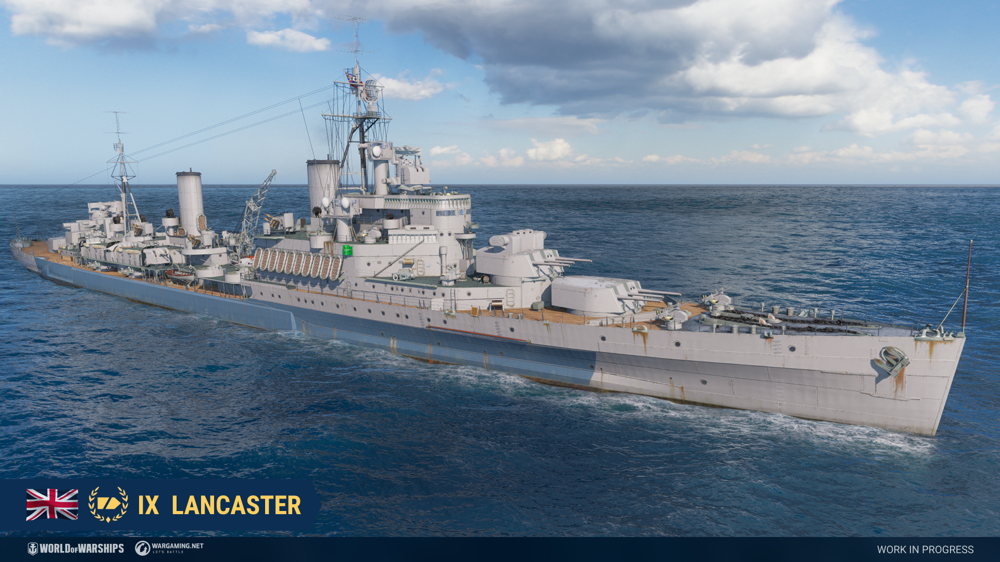

Cruisers Milwaukee, Columbia and Lancaster will be added to the game in a future update.
American cruiser Milwaukee, Tier VII

A flight deck cruiser proposal dating back to the early 1930s. Shortly after the Washington Naval Treaty, the United States Navy wanted to develop a low cost platform for aircraft that could perform both scouting duties and artillery roles. The idea of a flight deck cruiser was at first appealing, as it would be considered as a cruiser and would not count towards the limits set for aircraft carriers under the treaty. One of the proposed designs was described as half of a Brooklyn class forwards, and half of an aircraft carrier aft.
Similar to the likes of Tier VIII Japanese cruiser Tone, we were inspired to refit a Brooklyn class cruiser into a hybrid based on the characteristics of the flight deck cruiser designs the American navy came up with in the interwar period. Milwaukee has a total of 11 guns concentrated at the bow using triple turrets from the Brooklyn class and quadruple turrets from preliminary American light cruiser designs.
American cruiser Columbia, Tier X
The ship is at a very early stage of modeling.
In the years leading up to the 1920s, a series of design studies on "maximum battleships" was prepared by the Bureau of Construction and Repair of the American Navy. These designs were largely influenced by Senator Tillman who was annoyed with the navy's requrest to build larger ships every year and proposed to build the largest battleships possible, with the only limitation being the dimensions of the locks of the Panama Canal. The final design that was presented to Congress was IV-2, which consisted of fifteen 18-inch guns in five triple turrets, two fore and three aft. The ship would displace over 70,000 tons and would have a top speed of 25.2 knots.
The American Navy could have launched a design study on "maximum cruisers" based on the IV-2 design in the hopes of constructing a more practical capital ship with an emphasis on large quantities of 12-inch guns, similar to the ones mounted on the Alaska class cruisers. Columbia equips the same amount of guns as the IV-2 design in a similar layout but is armed with 12-inch instead of 18-inch guns.
British cruiser Lancaster, Tier IX

HMS Lancaster represents a never built British light cruiser based off a "repeat Belfast" design, which featured numerous improvements over Belfast and Edinburgh including improved deck armor, increased stability, and more advanced fire control. The project eventually evolved into the Neptune class, which ended up being cancelled due to budget cuts.
The name Lancaster was one of the names of towns submitted to the king by the ship naming committee in 1940. It was eventually given to a destroyer as part of the lend-lease program with the cruisers' cancellation, but had the cruisers continued it can be assumed that it would have been used for one of the ships.
The ship is equipped with twelve 152 mm guns with weak HE shells, a torpedo armament with the ability to launch individual torpedoes, good concealment, Burst Smoke Generator, Emergency Repair Party and Surveillance Radar with 10.5 km ship detection range. Thanks to her good concealment and Surveillance Radar consumable, Lancaster can help allies in fighting for caps and hunting for destroyers. Her special Smoke Generator with its shorter reload and smoke screen dispersion times will be useful when there is a need to retreat, but is not optimal for shooting at targets from inside the smoke for an extended period of time. The "Emergency Repair Party" is a variant of Specialized Repair Teams with a shorter duration which will allow Lancaster to quickly restore large amounts of her healthpool.
British cruiser Lancaster, Tier IX
Hit points – 42400. Plating - 25 mm. Fire duration - 30 s. Torpedo protection - 16%.
Main battery - 4x3 152 mm. Firing range - 16.8 km.
Maximum HE shell damage – 1900. HE shell armor penetration - 30 mm. Chance to cause fire
– 8%. HE initial velocity - 841 m/s.
Maximum AP shell damage - 3200. AP initial velocity - 841 m/s.
Reload time - 5.0 s. 180 degree turn time - 12.0 s. Maximum dispersion - 142 m. Sigma –
2.05.
Depth charges:
Maximimum damage - 5000. Number of charges - 2. Bombs in a charge - 12. Reload time - 40 s.
Torpedo tubes - 4x5 533 mm:
Maximum damage - 16767. Range - 12.5 km. Speed - 65 kt. Reload time - 131 s.
Launcher 180 degree turn time – 7.2 s. Torpedo detectability – 1.3 km.
Instead of choosing between wide and narrow spreads, captains can choose to fire off individual torpedoes or expend the entire launcher at once.
Secondary Armament:
6x2 102.0 mm, range 6.6 km.
Maximum HE shell damage – 1500. Chance to cause fire – 6%. HE initial velocity - 811
m/s
AA defense: 6x4, 18x1 40.0 mm., 6x2 102 mm., 4x3 152.0 mm.
AA defense short-range: continuous damage per second - 275.4, hit probability - 85 %,
action zone - 3.5 km;
AA defense mid-range: continuous damage per second - 105, hit probability - 75 %, action
zone - 5.8 km;
AA defense long-range: continuous damage per second - 120, hit probability - 75 %, action
zone - 6.9 km;
Number of explosions in a salvo - 10, damage within an explosion - 1900, action zone 3.5
- 6.9 km.
Maximum speed - 36.5 kt. Turning circle radius - 740 m. Rudder shift time – 8.4 s.
Surface detectability – 11.4 km. Air detectability – 7.2 km. Detectability after firing
main guns in smoke – 5.6 km.
Available consumables:
- 1 slot - Damage Control Party
- 2 slot - Emergency Repair Teams (Duration time – 10 s; HP per second – 1732; Reload time – 90 s; Charges – 3)
- 3 slot - Hydroacoustic Search
- 4 slot - Burst Smoke Generator (20 s emission 50s duration 6 charges)
- 5 slot - Surveillance Radar (Duration time – 40 s; Detection of ships – 10.5 km; Reload time – 120 s; Charges – 3)
All stats are listed without crew and upgrade modifiers but with best available modules. The stats are subject to change during the testing.
Please note that all information in the development blog is preliminary. Announced adjustments and features may change multiple times during testing. The final information will be published on our game's website.